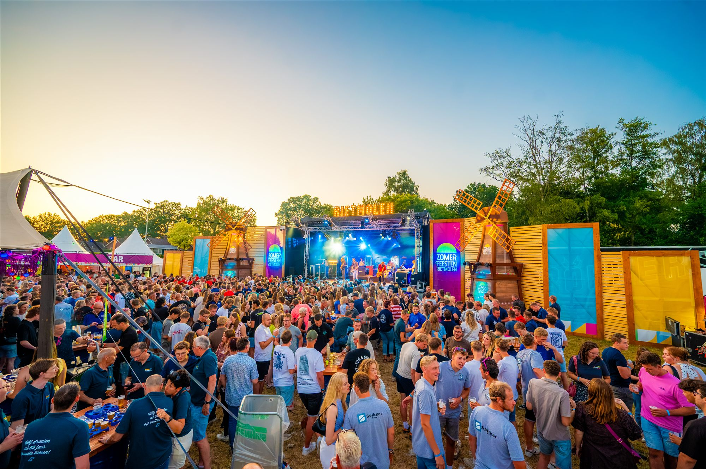
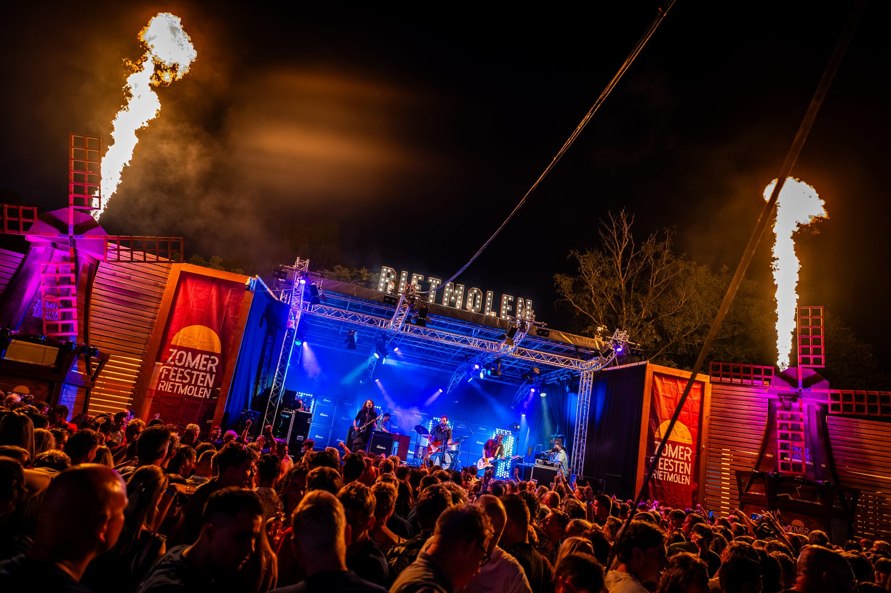
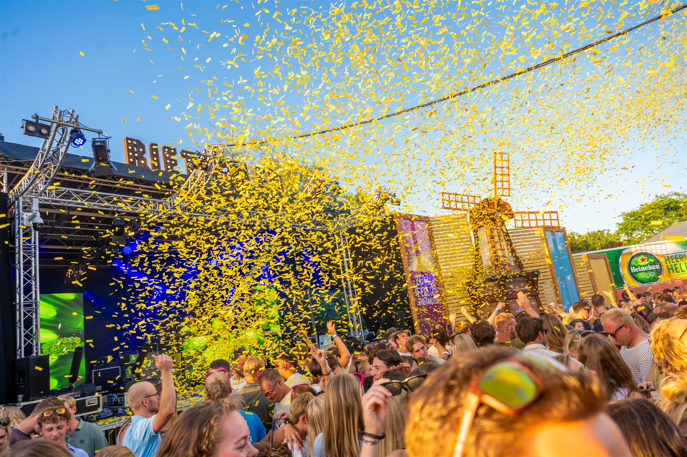
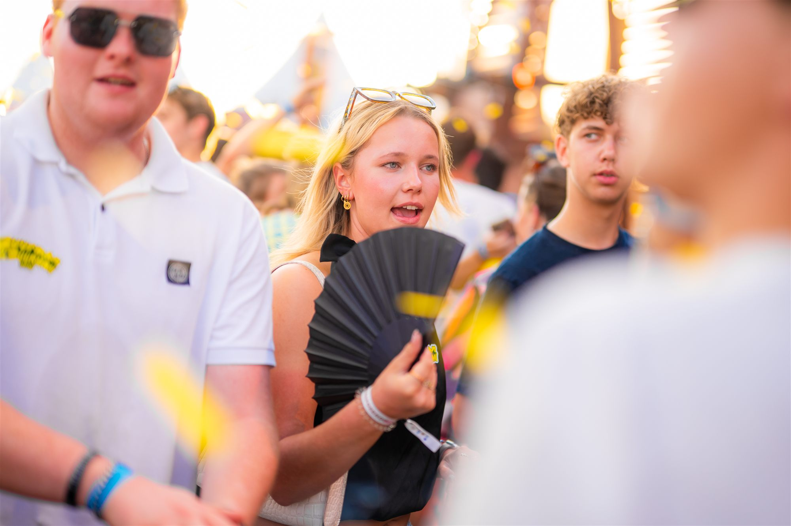

Zomerfeesten Rietmolen is een jaarlijks dorpsfeest, bijna 100 jaar oud, volledig georganiseerd door vrijwilligers vanuit het dorp en lokale verenigingen. Sinds 2019 zit ik in het organisatiecomité, waar ik een groot deel van de marketing op me neem. Daarnaast zit ik in de terreincommissie, zodat de huisstijl ook goed wordt vertaald in de aankleding van het festivalterrein zelf. Dit is allemaal vrijwilligerswerk.
Hoe marketing meer vorm kreeg
In 2019 was marketing erg klein: sociale media werd er een beetje bij gedaan, er werden geen posters gedrukt en er lag niet echt een basis. Ik werd destijds gevraagd om bij de organisatie aan te sluiten, en merkte al snel dat er nog veel winst te behalen was.
De marketing werd niet in één keer omgegooid, maar stap voor stap uitgebreid over de jaren. We gingen bewuster kijken naar welke doelgroepen we wilden aanspreken en hoe we hen konden bereiken met de beperkte middelen die we hebben. We werken nu vooruit met een contentkalender, zodat alle onderdelen van het festival op tijd in beeld komen bij de juiste doelgroep. Ook zijn we gaan samenwerken met een vaste fotografe, waardoor de foto's op onze feed nu een duidelijke lijn hebben in plaats van losse beelden per jaar.
Er is niet een specifiek plan aan te wijzen dat dit heeft veroorzaakt. Het is vooral het resultaat van structureel werken en blijven verbeteren: elk jaar zorgen dat de contentkalender zo vroeg mogelijk klaarstaat, ook al hangt veel af van wanneer de artiestenprogrammering rond is.
Ook zijn we destijds gestart met een nieuwe website, wat samen met een nieuwe visuele stijl (hierover verderop meer) qua promotie een aantal stappen zette. De website werd veel toegankelijker voor de gemiddelde bezoeker en was voor onszelf ook veel beter te beheren, waardoor de informatievoorziening naar bezoekers sterk verbeterde. Dit maakte het ook mogelijk om online voorverkoop in te richten, iets wat er voorheen nog niet was en wat ik zelf cruciaal vond voor de volgende stap. Naast dat dit vooraf al inkomsten oplevert, geeft het ons ook data op: leeftijden en woonplaatsen van bezoekers zijn nu bekend. Die data gebruiken we weer om gerichter posters te plakken, bijvoorbeeld door in specifieke plaatsen extra posters op te hangen waar we relatief weinig bezoekers vandaan zien komen.

Een herkenbare identiteit
De afgelopen twee jaar zijn we bezig geweest met het doorvoeren van een nieuwe huisstijl. De aanleiding was dat onze bestaande huisstijl door de jaren heen steeds verder vervaagde. Daar waar ooit een ontwerper een volledige branding had neergezet, was daar weinig van bewaard gebleven: geen fatsoenlijke bestanden voor drukwerk, ontbrekende brandingelementen, en steeds dezelfde achtergronden. Er was geen goede basis meer om op voort te bouwen.
We hebben een bevriende grafisch vormgever ingeschakeld voor een nieuw logo, en met een ontwerpbureau hebben we die stijl breder ingevoerd. Ik hielp dit in goede banen leiden door met hen mee te denken. Dit hebben we de afgelopen twee jaar doorgevoerd, en langzaam verder uitgebreid tot wat het nu is.
Nu hebben we een herkenbare huisstijl met vaste kleuren, een vast font, en een logo dat je op diverse manieren kunt toepassen afhankelijk van de uiting. Of het nu op posters gaat, in social media, op signage boven de bar, de muntenkassa, of eetkramen: het klopt allemaal.
Dat maakt veel dingen makkelijker. Je weet precies hoe iets eruit hoort te zien, dus content maken gaat sneller. Ook kunnen andere commissieleden makkelijker zelf iets maken dat in lijn is met de huisstijl.

Waar we nu staan
We bereiken veel mensen op social media, en de bezoekerscijfers en financiële uitkeringen aan de verenigingen zijn de afgelopen jaren flink gegroeid. Zo zijn de bezoekers op zaterdagavond tussen 2022 en 2026 gegroeid van 650 naar meer dan 2000. Het succes van Zomerfeesten hangt af van veel factoren: de programmering, de materialencommissie die het podium bouwt, de terreinaankleding, de verzorgingscommissie. Maar ik kan gerust stellen dat de marketing de afgelopen jaren flink is geprofessionaliseerd, waardoor we goed zichtbaar zijn bij de doelgroep en we ook weer mooie bedragen kunnen uitkeren aan de participerende verenigingen.

Sneller werken zonder kwaliteit in te leveren
Voor vrijwilligerswerk is tijd kostbaar. Daarom gebruik ik voor de socials ook AI. Ik heb een speciale skill/GPT gemaakt met exact de tone-of-voice en schrijfwijze die ik wil zien bij Zomerfeesten Rietmolen. Het werkt zo: je geeft een idee of inhaakmogelijkheid in en AI schrijft er een post van in onze gewenste stijl. Het denkwerk zit er nog steeds in (anders komen er alleen maar afgezaagde posts uit), maar het opschrijven gaat veel sneller. Dit werkt alleen omdat we eerst die vaste schrijfstijl hebben vastgelegd. Daarmee proberen we herkenbaar te zijn met zowel onze copy als onze visuals.
Mijn rol bij Zomerfeesten Rietmolen is vooral het stukje digitale strategie en marketing in aanloop naar, tijdens en na afloop van het festival: het opstellen van de contentkalender, contact met de pers, en ervoor zorgen dat alles op dezelfde lijn blijft.

Waar we naartoe werken
Wat ooit ad hoc was, heeft nu een echt fundament. We documenteren wat we doen, en dat vertrouwen betaalt zich uit: het bestuur ziet dat de aanpak zijn vruchten afwerpt en geeft ruimte om verder te investeren. Dat opent deuren, meer drukwerk, en ruimte om af en toe een gekkere campagne neer te zetten in plaats van alleen de vaste routine. De basis staat goed. Nu is het tijd om uit te bouwen.